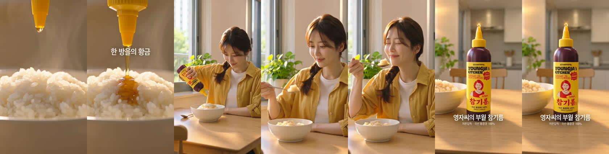
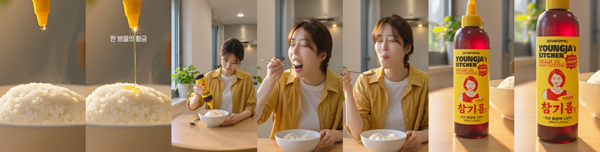

우리가 만든 광고 중 잘 된 것에서 골격을 찾아, 시댄스에서 잘 뽑는 법을 정리합니다. 프롬프트는 실제로 보낸 원문, 사진은 실제로 붙인 원본입니다.
같은 오더(아래 원문)를 Astra(Codex · gpt-6-astra)와, 이 대화를 모르는 새 Claude Opus 에이전트에게 줬습니다. 양쪽 모두 오더·시트 3장·판매페이지만 보고 프롬프트를 직접 쓰고 시댄스 2.5 · 480p · 9:16 · 15초로 뽑았습니다.
보낸 오더 원문
시댄스 2.5, 15초 영상, 480p, 9대16 기준
참기름 15초 CF(실사) - 여자가 집 식탁에서 갓 지은 흰밥에 참기름을 짜서 비벼 먹고 제품 히어로컷으로 마무리, 제품 히어로컷, 황금빛 기름 줄기, 카피 타이밍, 광고 문법(3초 훅->제품->엔드카드). 제품명은 영자씨의 부엌 참기름(한 방울의 황금 · 저온압착). 따뜻한 집밥 고채도, BGM필수
시트 : 캐릭터 여자 / 참기름 병 / 배경 식탁
시트 경로 : C:/AI_Production_System/coordination/meetings/tpltest/brief_test/sesame/ (sesame_anchor.png · sesame_product_sheet.png · sesame_table.png)
참고 : 판매페이지 https://horsenpig.com/product/detail.html?product_no=183
Claude 에이전트의 콘셉트 기록 concepts.md 원문
# 영자씨의 부엌 참기름 15초 — 콘셉트·판 기록 (Claude, 2026-11-17)
## 자료에서 확인한 사실 (시트 3장 + 판매페이지 그림 46장·글 전부 원본으로 열어 봄)
- 병: 짙은 적갈색(빛 차단) 플라스틱 스퀴즈 병, 노란 톱니 뚜껑 + 길고 뾰족한 노란 노즐, 노란 라벨(빨간 일러스트 여성 · YOUNGJA's KITCHEN · 저온압착 · 참기름 · 국산 통참깨 100% · 200ml). 판매페이지 08·11·22·24 그림과 시트 일치.
- **기름 색은 병 색과 다르다**: 상세 GIF 010(숟가락에 짜기)·013(캠핑 유리 볼)에서 기름은 **맑은 연노랑 금색**, 가는 실줄기로 나온다. 병은 거꾸로 세워 짠다. → 「황금빛 기름 줄기」를 짙은 갈색으로 만들면 틀린다.
- 판매페이지 핵심 문구: 「우리는 이것을 '한 방울의 황금'이라고 부릅니다」(014), 「SQUEEZE GOLDEN LIQUID」(008), 「마지막 한 방울까지」, 「엄마의 마음으로」.
- 리뷰 문장(011): 「진간장에 참기름 살짝 넣어 흰쌀밥 비벼 먹었습니다」 — 오더 장면과 같은 실제 사용 장면.
- 식탁 시트에는 비빔밥(나물·달걀·고추장)이 차려져 있음 → 오더는 「갓 지은 흰밥」이므로 그릇 내용은 프롬프트에서 흰밥만으로 바꿔 지정.
## 떠올린 방향
| 안 | 내용 | 구현 가능성(시댄스 15초 한 번 생성) | 판정 |
|---|---|---|---|
| A. 「한 방울의 황금」 시즐 | 0~3초 김 나는 흰밥 위 노즐에서 금빛 실줄기 매크로(훅) → 여자가 거꾸로 짜서 둘러 붓기 → 비벼 한 입·눈 감고 「음~」 → 병 히어로·엔드 | 매크로 액체·한 사람·한 공간·병 하나 — 엔진이 잘하는 「한 장으로 보이는」 컷 위주 | **채택** |
| B. 엄마 손맛 회상 | 엄마(라벨 영자씨)가 차려 주던 밥 회상 → 지금 내가 짜 먹음 | 인물 2명·시간 이동 → 15초 한 번 생성에서 인물 섞임·전환 실패 위험, 오더에 없는 인물 추가 | 보류 |
| C. 스퀴즈 편의 강조 | 유리병 vs 스퀴즈 비교(흘림 없음·마지막 한 방울) | 비교 대상 병을 새로 만들어야 함(시트 없음), 오더의 「식탁에서 비벼 먹기」 축이 흐려짐 | 보류 |
A 를 고른 이유: 오더의 필수 요소(흰밥에 짜서 비벼 먹기 · 황금빛 기름 줄기 · 3초 훅→제품→엔드카드 · 히어로컷)가 전부 A 한 줄기 안에 들어가고, 판매페이지가 스스로 내세우는 말(「한 방울의 황금」)을 그대로 훅 카피로 쓸 수 있다. 훅을 사람 얼굴이 아니라 **기름 줄기 매크로**로 연 것은 첫 3초에 제품의 차별점(맑은 금빛)을 바로 보이기 위해서.
카피 운용: 화면 글자는 짧은 것 하나(「한 방울의 황금」)만 엔진에 맡기고, 제품명·저온압착은 **여자 목소리 내레이션 + 병 라벨**로 전달. BGM 은 어쿠스틱 기타·가벼운 박수.
첨부 순서: Image 1 = 제품 시트(정확도 최우선이라 맨 앞) · Image 2 = 인물 시트 · Image 3 = 식탁 시트.
## 판 수: 2판 (같은 콘셉트, 2판은 1판 결함 수정)
두 콘셉트를 한 판씩 뽑기보다, A 한 줄기를 뽑고 나온 결과의 결함을 보고 방법을 고치는 쪽이 납품 품질에 더 가깝다고 판단.
### 1판에서 본 것 (1초 간격 프레임 + 자막 부분 확대 + faster-whisper 받아쓰기)
- 좋음: 훅 매크로(노즐 끝 방울 → 줄기) 성립, 인물·식탁 일치, 히어로컷 병 색·모양 정확, 내레이션 2줄 들어감.
- 결함: ① 엔드카드 자막 오탈자 「영자씨의 **부윌** 참기름」「저온압**척** · 국산 통참**깉**」 → 광고 납품 불가. ② 기름이 짙은 호박색이고 양이 많아 밥이 볶음밥처럼 갈색으로 변함(판매페이지의 맑은 연노랑과 다름). ③ 비비는 컷에 손·숟가락 동작이 약함. ④ 대화 없는 구간 음량 약 -34dB(완전 무음은 아님, BGM 이 작음).
### 2판에서 바꾼 것
- 엔드카드의 한글 문장 자막을 없애고, **라벨 자체를 화면 가득 밀어 들어가** 라벨에 인쇄된 「저온압착」「참기름」으로 카피를 대신(이미 있는 정확한 글자를 쓰는 방법). 추가 자막은 1판에서 비교적 멀쩡했던 「한 방울의 황금」 하나로 제한.
- 기름 색을 「light lemon-gold, never dark amber」로, 양을 「thin swirl」로, 밥은 「stays snow-white」로 못 박음.
- 비비는 컷에 「her hand stirs and folds」, BGM 을 「clearly audible … from first to last second」.
### 2판 결과
- 나아진 것: 밥이 끝까지 흰색·기름이 연한 금빛(1판 대비 확연), 병을 거꾸로 세워 짜는 자세가 판매페이지와 같아짐, 비비는 손 보임, 엔드카드에 깨진 한글 문장 자막 없음.
- 나빠진 것: 히어로컷에서 **병 몸통이 맑은 빨강으로 바뀜**(실물은 짙은 적갈색 — 1판이 정확), 라벨 작은 글씨 깨짐(「영자씨의부엌」→ 판독 불가, 「국산 통참깨」→「국산 통취메」, SESAME OIL → 「CESAME OIL COOD PRESSEO」), 마지막에 뚜껑이 화면 밖으로 잘림, 엔드카드에 「한 방울의 황금」 자막은 안 나옴.
- 확인 못 한 것: 훅 자막 둘째 낱말이 「방울」인지 「방을」인지 — 480p 확대에서 ㅜ 세로획이 보이지 않아 **「방을」로 읽힐 가능성**이 있음(두 판 공통). BGM 이 음악인지 귀로 확인하지 못함(음량 측정만: 2판 4~5.5초 -21.8dB, 6~7.5초 -33.6dB).
- 내레이션 받아쓰기: 1판 「갓찌운 밥에 한 방울의 황금 / 저원 앞착 / 영자 씨의 부엌 참기름」, 2판 「가치음 밥에 한방울의 황금 / 전압착 영자씨의 부엌 참기름」(받아쓰기 모델 오차 포함, 귀 확인은 안 함).
## 남은 과제(다음 판이 있다면)
- 한글 카피는 엔진 글자 렌더에 맡기지 말고 후반 자막으로 얹는 게 정답에 가깝다(두 판 모두 한글 작은 글씨가 깨짐).
- 히어로컷 병 색은 「opaque dark reddish-brown, light does not pass through」처럼 역광에서도 비치지 않게 지정해야 함(2판은 역광 rim light 때문에 빨갛게 비친 것으로 추정).
Claude(새 Opus 에이전트) 1판
오더만 받고 콘셉트 3개 → 「한 방울의 황금」 시즐 선택

붙인 사진 순서 1 sesame_product_sheet.png → 2 sesame_anchor.png → 3 sesame_table.png
Claude(Head) 원본 확인 오더대로 기본형 음식 광고(노즐 끝 금빛 줄기 매크로 훅 → 짜기 → 먹고 미소 → 병 히어로). 병 모양·색은 맞음. 기름이 짙은 호박색이라 밥이 갈색으로 변함 · 훅 자막 「한 방을의 황금」 · 엔드 자막 「영자씨의 부윌 참기름」 깨짐.
프롬프트 원문 464단어
15-second vertical 9:16 live-action Korean food commercial for a sesame oil. Photoreal, warm home-cooked look, high saturation, golden late-morning window light, appetizing food cinematography, shallow depth of field.
References:
- Image 1 = the product. Show exactly ONE bottle, identical to Image 1: a dark reddish-brown plastic squeeze bottle, bright yellow ribbed cap with a tall pointed yellow nozzle, yellow label with the red illustrated smiling woman, "YOUNGJA's KITCHEN" and big red "참기름". Keep its shape, proportions, colors and label exactly as in Image 1.
- Image 2 = the woman. Same face, dark brown hair in a low side braid with soft bangs, mustard-yellow shirt with rolled sleeves over a white T-shirt.
- Image 3 = the place. The same dining table, chairs, window with the green plant and the white kitchen behind, exactly as in Image 3. On the table in front of her there is ONLY a white bowl of freshly cooked, steaming plain white rice (no vegetables, no egg, no sauce on it) and a metal spoon.
The oil itself is clear, bright pale-golden, translucent like liquid gold — NOT dark brown. The bottle is squeezed upside down and a thin, clean, continuous golden stream comes out of the pointed nozzle tip.
[0-3s] HOOK. Extreme macro, slow motion. Steam rises from glossy white rice grains. From the top of frame the yellow nozzle tip of the upside-down bottle enters and a thin shimmering golden stream of oil pours onto the rice, catching the sunlight and spreading into a glistening pool between the grains. On-screen text appears at the top: "한 방울의 황금".
[3-6s] Medium shot at the table by the window. The woman from Image 2 sits at the table, holds the bottle from Image 1 upside down with one hand and squeezes a golden swirl over the rice, label facing the camera, a small happy smile.
[6-10s] Close-up. She mixes the rice with the spoon; the grains turn shiny and golden. Then medium close-up: she lifts a big spoonful, eats it, closes her eyes and smiles with a satisfied "음~".
[10-15s] PRODUCT HERO and END CARD. The bottle stands upright on the wooden table next to the rice bowl, sunlight rim-lights it and a single golden drop glints on the nozzle tip; slow push-in until the bottle and label fill the center of the frame. Background softly blurred warm kitchen. On-screen text appears below the bottle: "영자씨의 부엌 참기름" and smaller "저온압착 · 국산 통참깨 100%". Hold still for the last 2 seconds.
Audio: warm, cheerful acoustic guitar and light percussion BGM throughout, gentle sizzle-free soft ambience, the soft sound of the oil and the spoon. A warm Korean female voice-over, calm and friendly:
(0-3s) "갓 지은 밥에, 한 방울의 황금."
(10-14s) "저온압착, 영자씨의 부엌 참기름."
No other speech.
Claude(새 Opus 에이전트) 2판
2판은 1판 결함만 고쳐 같은 콘셉트로 다시 뽑음 — Head 가 「최대 2판」을 잘못 열어 줌

붙인 사진 순서 1 sesame_product_sheet.png → 2 sesame_anchor.png → 3 sesame_table.png
Claude(Head) 원본 확인 밥이 흰색으로 유지되고 거꾸로 짜는 자세가 판매페이지와 같아짐. 히어로컷 병 몸통이 투명한 빨강으로 바뀜(실물은 불투명 적갈색) · 라벨 작은 글씨 깨짐 · 훅 자막 「한 방을의 황금」.
프롬프트 원문 499단어
15-second vertical 9:16 live-action Korean food commercial for a sesame oil. Photoreal, warm home-cooked look, high saturation, golden late-morning window light, appetizing food cinematography, shallow depth of field.
References:
- Image 1 = the product. Show exactly ONE bottle, identical to Image 1: a dark reddish-brown plastic squeeze bottle, bright yellow ribbed cap with a tall pointed yellow nozzle, yellow label with the red illustrated smiling woman, "YOUNGJA's KITCHEN", the oval "저온압착" badge and big red "참기름". Keep its shape, proportions, colors and label exactly as in Image 1.
- Image 2 = the woman. Same face, dark brown hair in a low side braid with soft bangs, mustard-yellow shirt with rolled sleeves over a white T-shirt.
- Image 3 = the place. The same dining table, chairs, window with the green plant and the white kitchen behind, exactly as in Image 3. On the table in front of her there is ONLY a white bowl of freshly cooked, steaming plain white rice (no vegetables, no egg, no sauce) and a metal spoon.
The oil is clear, light lemon-gold and translucent, like liquid gold in sunlight — light and bright, never dark amber or brown. Only a small amount is used: a thin swirl. The rice stays snow-white with a glossy golden sheen; it never turns brown or looks like fried rice.
[0-3s] HOOK. Extreme macro, slow motion. Steam rises from snow-white rice grains. The yellow pointed nozzle of the upside-down bottle enters from the top of frame; one golden drop forms at the tip, then a thin, clean, shimmering light-gold stream falls onto the rice and sparkles in the sun. On-screen text at the top: "한 방울의 황금".
[3-6s] Medium shot at the table by the window. The woman from Image 2 holds the bottle from Image 1 upside down above the bowl and gently squeezes a thin golden swirl over the rice, the front of the label clearly facing the camera, a small happy smile.
[6-10s] Close-up on the bowl: her hand stirs and folds the rice with the spoon, the grains turn glossy and shining, still white. Then medium close-up: she lifts a spoonful, eats it, closes her eyes and smiles, "음~".
[10-15s] PRODUCT HERO. The bottle stands upright on the wooden table next to the rice bowl, sunlight rim-lights it, a single golden drop glints on the nozzle tip. Slow push-in toward the label until the printed label (the smiling woman, "저온압착" badge and big red "참기름") fills the center of the frame, sharp and readable, exactly as printed in Image 1. The only added on-screen text is "한 방울의 황금" at the top. Hold still for the last 2 seconds.
Audio: a clearly audible, warm and cheerful acoustic guitar BGM with light claps runs from the first to the last second, plus the soft sounds of the oil and the spoon. A warm Korean female voice-over, calm and friendly:
(0-3s) "갓 지은 밥에, 한 방울의 황금."
(10-14s) "저온압착, 영자씨의 부엌 참기름."
No other speech.
Astra(Codex) 1판
첫 3초의 황금빛 기름 줄기에서 제품 공개, 비비기와 한입, 마지막 히어로컷으로 이어지도록 동작과 카피 시간을 배분했습니다. 세 이미지의 역할을 분리하고 식탁 사진의 비빔밥을 흰밥으로 교체하도록 명시했으며, 문구는 오더에 주어진 내용만 사용했습니다.
영상 생성 대기 — Dan 이 Astra 세션에서 1판 승인 후 들어옴
붙인 사진 순서 1 sesame_anchor.png → 2 sesame_product_sheet.png → 3 sesame_table.png
Claude(Head) 원본 확인 영상 없음 — 같은 프롬프트·같은 사진으로 두 번 제출(Job 1a8b2549 · bc17922d) 모두 시댄스가 ip_detected 로 거부, 결과 URL 미반환 · 결제는 두 번 다 45cr 차감 뒤 환불(실비 0). 프롬프트(gpt-6-astra 작성, 실제 제출본과 일치 확인)는 Claude 1판과 같은 기본형 흐름(금빛 기름 줄기 매크로 훅 → 짜기 → 비비기 → 한 입 → 병 히어로·자막 3줄). 같은 시트 3장인데 Claude 쪽은 통과 — 차이는 사진 순서(Astra 여자→제품→식탁 · Claude 제품→여자→식탁). 인물이 맨 앞이면 유명인 닮음 판정이 걸린다는 이전 기록이 있으나 이번 원인으로 확인된 것은 아님.
프롬프트 원문 668단어
Create a 15-second photorealistic sesame oil TV commercial for Seedance 2.5. Vertical 9:16, 480p. Warm, richly saturated home-cooked meal atmosphere, natural window light, appetizing food textures, polished commercial cinematography. Required structure: 0–3 second hook → product and use → final product hero end card.
REFERENCE ASSIGNMENT:
Image 1 (sesame_anchor.png): adult female character identity and wardrobe only. Match the face shown in the right-hand portrait, braided dark hair, mustard-yellow overshirt and white T-shirt. She must have a complete, anatomically natural head and body; do not reproduce the headless front-view reference layout.
Image 2 (sesame_product_sheet.png): exact product bottle reference. Preserve the dark brown bottle, yellow dispensing cap, yellow label, red portrait illustration and original branding. These are multiple views of ONE bottle, not three separate products. Product name: 영자씨의 부엌 참기름. Preserve the reference label rather than inventing or redesigning its lettering.
Image 3 (sesame_table.png): home kitchen, wooden dining table, window lighting and tableware reference. Replace the pictured bibimbap with a ceramic bowl of freshly cooked plain white rice. No fried egg, vegetables or red sauce on the rice. Recompose this setting for vertical framing; do not reproduce the reference as a static sheet.
SHOT PLAN — exact total duration 15 seconds:
0.0–3.0s | Immediate sensory hook. Extreme close-up of a thin, continuous golden sesame oil stream landing on steaming white rice, creating a glossy golden trace between distinct rice grains. The reference bottle's dispensing tip is visible near the top of frame, its outlet open. The oil flows physically from that tip, with no floating liquid or disconnected stream. Warm backlight makes the golden oil sparkle while retaining realistic viscosity. At 0.7s, overlay the exact Korean copy “한 방울의 황금”. Keep it legible until 2.8s.
3.0–6.0s | Product reveal and continuity. Cut to a medium close-up at the referenced home dining table. The woman from Image 1 is seated, finishing the same gentle squeeze of the bottle from Image 2 over her bowl of white rice. Briefly show the recognizable front label toward camera without an unnatural wrist pose. She stops pouring, turns the bottle upright and sets it securely beside the bowl. At 3.3s, display the exact product name “영자씨의 부엌 참기름”; clear this overlay by 5.8s.
6.0–9.0s | Appetizing preparation. Tight three-quarter view of the bowl and her hand as she uses a metal spoon to gently fold and mix the sesame oil into the white rice. Show the rice acquiring a delicate, realistic sheen and faint steam. Maintain the same bowl, bottle, wardrobe and daylight. No additional ingredients appear.
9.0–11.5s | Enjoyment. Medium close-up of her face and upper body. She lifts one modest spoonful of rice, takes one natural bite, withdraws the spoon and gives a small, satisfied smile. Relaxed home-meal performance; no dialogue or exaggerated reaction.
11.5–15.0s | Product hero end card. Clean cut to one upright reference bottle on the same wooden table, front label facing camera and bottle fully visible. The rice bowl and warm kitchen sit softly out of focus behind it. Beautiful controlled highlights define the yellow cap and dark brown bottle. A subtle camera push-in settles into a stable final composition. Display three clearly separated, correctly spelled Korean lines in uncluttered space beside or above the bottle: “영자씨의 부엌 참기름” / “한 방울의 황금” / “저온압착”. All three lines must be fully visible from 12.0s through the final frame. Keep text within vertical mobile-safe margins and never cover the bottle label. Finish on the product, not the woman's face.
AUDIO: BGM is mandatory throughout all 15 seconds: warm, light acoustic instrumental with a gentle rhythmic pulse, no vocals. Add subtle synchronized pouring, spoon-and-bowl and dining sounds beneath the music. Resolve the music neatly on the final hero frame. No voiceover.
Maintain realistic hands, utensil contact, liquid flow and swallowing across clean editorial cuts. Show only one woman and one consistent product bottle. No reference-sheet panels, split screens, additional logos, invented label text, health claims, nutritional claims, promotional claims, prices or calls to action. Use only the specified on-screen copy.
Astra 와 Claude 의 차이 (파일 원문 대조)
| Astra (gpt-6-astra · 새 비대화형 실행) | Claude (새 Opus 에이전트) |
|---|
| 이미지 순서 | 여자 → 제품 → 식탁 | 제품 → 여자 → 식탁 |
| 이미지 넣는 방식 | role image | role image_references (우리 기준) |
| 프롬프트 길이 | 668단어 | 453단어(1판) |
| 인물 설명 | 시트 구조까지(「오른쪽 얼굴 칸의 얼굴을 따르고 머리 없는 정면 칸은 따라 하지 말 것」) | 얼굴·머리·옷만 |
| 기름 색 | golden | 맑은 옅은 금빛 · 짙은 갈색 아님 |
| 시간 배분 | 5구간 · 0.1초 단위 자막 타이밍 | 4구간 |
| 카피 | 화면 자막 3번 · 나레이션 없음 | 나레이션 2줄 + 화면 자막 2번 |
| 금지 문단 | 길게(시트 칸·분할·로고·지어낸 라벨 글자·건강·가격·CTA) | 거의 없음 |
| 결과 | 두 번 제출 모두 ip_detected · 영상 없음 · 결제 두 번 다 환불 | 두 판 다 나옴(90cr) |
장면 흐름은 양쪽이 같습니다(금빛 기름 줄기 훅 → 짜기 → 비비기 → 한 입 → 병 히어로). Astra 가 처음 쓴 프롬프트와 실제 제출본은 668단어 그대로 일치(확인). Astra 만 거부된 원인은 시댄스가 사유를 주지 않아 확인 못 함 — 의심은 「여자 시트 맨 앞 + role image」(단, 9-14 빨대 서핑도 role image 로 통과).
Astra 쪽 원본 기록 (Codex 가 남긴 파일 그대로)
Astra 쪽 기록 · submission.json
{
"state": "submission_pending",
"expected_jobs": 1,
"estimated_credits": 45,
"prompt_model": "gpt-6-astra",
"astra_run_id": "01a1e51b-9e46-7781-be0b-361165553eaa",
"video_model": "seedance_2_5",
"options": {
"model": "seedance_2_5",
"mode": "omni_reference",
"duration": 15,
"aspect_ratio": "9:16",
"resolution": "480p",
"draft": true,
"generate_audio": true,
"bitrate_mode": "standard",
"count": 1,
"use_unlim": false,
"medias": [
{
"role": "image",
"value": "294a1755-aea8-41e8-b970-6980d07c0c78"
},
{
"role": "image",
"value": "a2223585-19fa-4da5-bf4d-e88d7e19dcb3"
},
{
"role": "image",
"value": "c42dda96-bdda-4920-bb51-e093a993aecf"
}
]
},
"image_order": [
"sesame_anchor.png",
"sesame_product_sheet.png",
"sesame_table.png"
]
}
Astra 쪽 기록 · retry_submission.json
{
"state": "submission_pending",
"expected_jobs": 1,
"previous_job": "1a8b2549-81e5-4878-9987-f5da80c92df9",
"same_as_original": true,
"options": {
"model": "seedance_2_5",
"mode": "omni_reference",
"duration": 15,
"aspect_ratio": "9:16",
"resolution": "480p",
"draft": true,
"generate_audio": true,
"bitrate_mode": "standard",
"count": 1,
"use_unlim": false,
"medias": [
{
"role": "image",
"value": "294a1755-aea8-41e8-b970-6980d07c0c78"
},
{
"role": "image",
"value": "a2223585-19fa-4da5-bf4d-e88d7e19dcb3"
},
{
"role": "image",
"value": "c42dda96-bdda-4920-bb51-e093a993aecf"
}
]
}
}
Astra 쪽 기록 · result.json
{
"prompt_author_model": "gpt-6-astra",
"prompt_author_run_id": "01a1e51b-9e46-7781-be0b-361165553eaa",
"prompt_author_execution": "새 읽기 전용의 비대화형 Astra 실행",
"video_model": "seedance_2_5",
"job_id": "1a8b2549-81e5-4878-9987-f5da80c92df9",
"submitted_count": 1,
"estimated_credits": 45,
"actual_credits": null,
"duration": 15,
"resolution": "480p",
"aspect_ratio": "9:16",
"draft": true,
"generate_audio": true,
"reference_images": [
{
"index": 1,
"file": "sesame_anchor.png",
"role": "여자 캐릭터",
"media_id": "294a1755-aea8-41e8-b970-6980d07c0c78",
"source": "C:/AI_Production_System/coordination/meetings/tpltest/brief_test/sesame/sesame_anchor.png"
},
{
"index": 2,
"file": "sesame_product_sheet.png",
"role": "제품 병",
"media_id": "a2223585-19fa-4da5-bf4d-e88d7e19dcb3",
"source": "C:/AI_Production_System/coordination/meetings/tpltest/brief_test/sesame/sesame_product_sheet.png"
},
{
"index": 3,
"file": "sesame_table.png",
"role": "식탁 배경",
"media_id": "c42dda96-bdda-4920-bb51-e093a993aecf",
"source": "C:/AI_Production_System/coordination/meetings/tpltest/brief_test/sesame/sesame_table.png"
}
],
"prompt_file": "seedance_prompt.txt",
"rationale_ko": "첫 3초의 황금빛 기름 줄기에서 제품 공개, 비비기와 한입, 마지막 히어로컷으로 이어지도록 동작과 카피 시간을 배분했습니다. 세 이미지의 역할을 분리하고 식탁 사진의 비빔밥을 흰밥으로 교체하도록 명시했으며, 문구는 오더에 주어진 내용만 사용했습니다.",
"prompt_match": true,
"status": "ip_detected",
"error_detail": null,
"result_url": null,
"video_file": null
}
Astra 쪽 기록 · retry_result.json
{
"prompt_author_model": "gpt-6-astra",
"prompt_author_run_id": "01a1e51b-9e46-7781-be0b-361165553eaa",
"prompt_author_execution": "새 읽기 전용의 비대화형 Astra 실행",
"video_model": "seedance_2_5",
"job_id": "bc17922d-8598-4c09-b9f2-75274fbe174d",
"submitted_count": 1,
"estimated_credits": 45,
"actual_credits": null,
"duration": 15,
"resolution": "480p",
"aspect_ratio": "9:16",
"draft": true,
"generate_audio": true,
"reference_images": [
{
"index": 1,
"file": "sesame_anchor.png",
"role": "여자 캐릭터",
"media_id": "294a1755-aea8-41e8-b970-6980d07c0c78",
"source": "C:/AI_Production_System/coordination/meetings/tpltest/brief_test/sesame/sesame_anchor.png"
},
{
"index": 2,
"file": "sesame_product_sheet.png",
"role": "제품 병",
"media_id": "a2223585-19fa-4da5-bf4d-e88d7e19dcb3",
"source": "C:/AI_Production_System/coordination/meetings/tpltest/brief_test/sesame/sesame_product_sheet.png"
},
{
"index": 3,
"file": "sesame_table.png",
"role": "식탁 배경",
"media_id": "c42dda96-bdda-4920-bb51-e093a993aecf",
"source": "C:/AI_Production_System/coordination/meetings/tpltest/brief_test/sesame/sesame_table.png"
}
],
"prompt_file": "seedance_prompt.txt",
"rationale_ko": "첫 3초의 황금빛 기름 줄기에서 제품 공개, 비비기와 한입, 마지막 히어로컷으로 이어지도록 동작과 카피 시간을 배분했습니다. 세 이미지의 역할을 분리하고 식탁 사진의 비빔밥을 흰밥으로 교체하도록 명시했으며, 문구는 오더에 주어진 내용만 사용했습니다.",
"prompt_match": true,
"status": "ip_detected",
"error_detail": null,
"result_url": null,
"video_file": null,
"previous_job_id": "1a8b2549-81e5-4878-9987-f5da80c92df9",
"same_prompt_and_images": true
}
Astra 쪽 기록 · handoff_final.md
# 영자씨의 부엌 참기름 CF · 한 판 제출 결과
Seedance 2.5에 단 한 판 제출. Job ID 1a8b2549-81e5-4878-9987-f5da80c92df9. 최종 상태 **ip_detected**. 서비스가 결과 URL이나 영상을 반환하지 않았다. 탐지 대상이나 세부 사유와 실제 차감은 확인되지 않았다. 제출 전 견적은 45 크레딧이었다.
## 제출 원문과 모델
[실제 제출 프롬프트 원문](seedance_prompt.txt) · [Dan 오더 전달본](dan_order_relayed.txt) · [서비스 접수 응답과 검증 기록](result.json)
프롬프트 작성 모델은 gpt-6-astra. 신규 읽기 전용 Astra 실행 ID는 01a1e51b-9e46-7781-be0b-361165553eaa. 실제 Seedance 접수 응답과 원문을 대조했다. 영상 모델은 Seedance 2.5 (seedance_2_5), 15초, 480p Draft, 9:16, 오디오 켜짐.
## 실제 제출 이미지 순서
1. 여자 캐릭터 [sesame_anchor.png](C:/AI_Production_System/coordination/meetings/tpltest/brief_test/sesame/sesame_anchor.png) · media 294a1755-aea8-41e8-b970-6980d07c0c78
2. 제품 병 [sesame_product_sheet.png](C:/AI_Production_System/coordination/meetings/tpltest/brief_test/sesame/sesame_product_sheet.png) · media a2223585-19fa-4da5-bf4d-e88d7e19dcb3
3. 식탁 배경 [sesame_table.png](C:/AI_Production_System/coordination/meetings/tpltest/brief_test/sesame/sesame_table.png) · media c42dda96-bdda-4920-bb51-e093a993aecf
## Astra가 설명한 작성 이유
> 첫 3초의 황금빛 기름 줄기에서 제품 공개, 비비기와 한입, 마지막 히어로컷으로 이어지도록 동작과 카피 시간을 배분했습니다. 세 이미지의 역할을 분리하고 식탁 사진의 비빔밥을 흰밥으로 교체하도록 명시했으며, 문구는 오더에 주어진 내용만 사용했습니다.
Astra 쪽 기록 · retry_handoff.md
# 참기름 CF · 재시도 한 판
첫 작업 1a8b2549-81e5-4878-9987-f5da80c92df9 종료 뒤 Dan 요청으로 같은 입력을 한 판 제출했다. 재시도 Job ID bc17922d-8598-4c09-b9f2-75274fbe174d · 최종 상태 ip_detected. 서비스가 영상이나 결과 URL을 반환하지 않았다.
프롬프트 작성 모델 gpt-6-astra, 영상 모델 Seedance 2.5. 실제 제출 응답에서 프롬프트 일치와 여자 → 제품 → 식탁 순서를 확인했다. 제출 전 견적은 45 크레딧이며 실제 차감은 미확인이다.
[프롬프트 원문](seedance_prompt.txt) · [실제 이미지 순서 및 작성 이유](handoff_final.md) · [재시도 기록](retry_result.json)